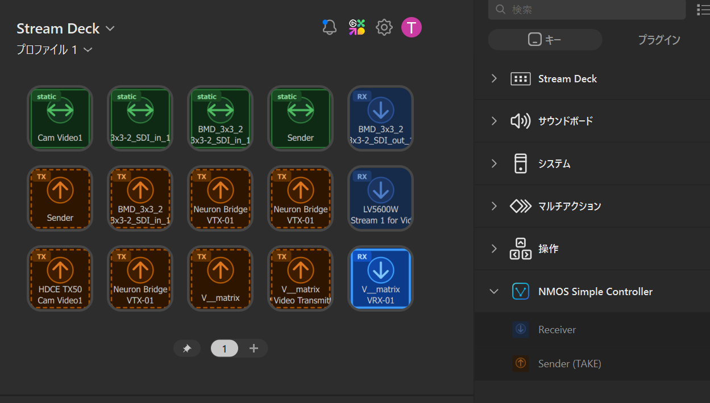

NMOS Simple Controller
Stream Deck Plugin — Elgato
Stream Deck Plugin — Elgato
Overview
NMOS Simple Controller is an Elgato Stream Deck plugin that brings IS-04 / IS-05 NMOS connection control to your Stream Deck hardware. Assign sender/receiver pairs to individual buttons and switch connections with a single press.
Designed for live production environments where tactile, hardware-based control is essential — connecting seamlessly with NMOS Simple BCC or any IS-05 compatible system.
Features

Quick Start
Download the plugin
Download the latest .streamDeckPlugin file from the GitHub Releases page.
Install via Stream Deck software
Double-click the downloaded file. The Elgato Stream Deck software will automatically install the plugin.
Configure your IS-04 registry
In the plugin settings, enter your NMOS Query API endpoint. The plugin will discover available senders and receivers.
Assign connections to buttons
Drag the NMOS Simple Controller action onto a Stream Deck button, then select the sender and receiver to connect. Press the button to activate.